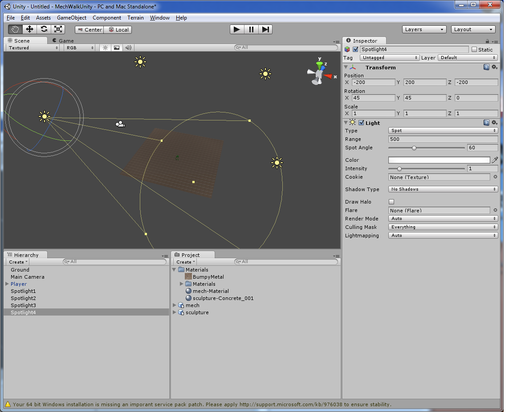
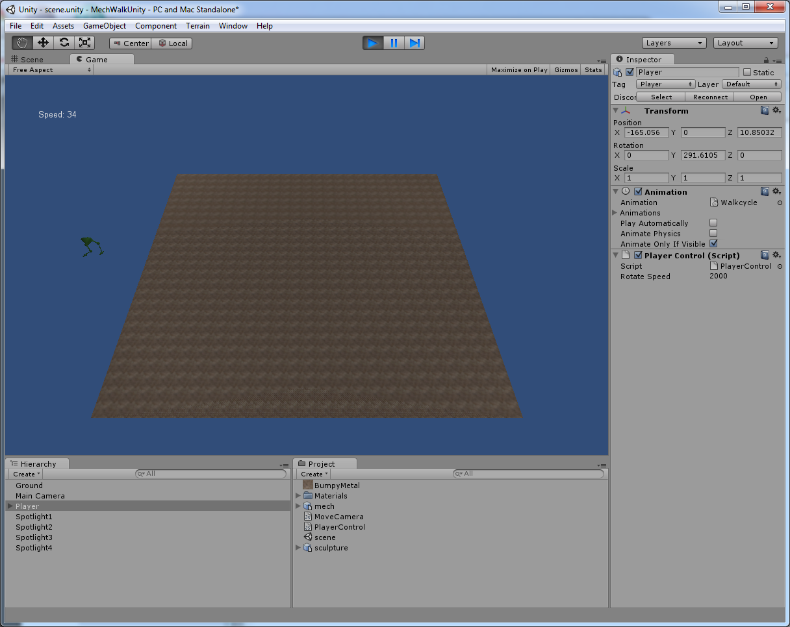

Unity3D Beginner for Beginner Tutorial: Mech
16th April 2011 - Unity3D 3.3 & Blender 2.47
After creating a simple game with Ogre3D (part 1 & part 2), I thought I should try a different library for comparison. In this tutorial I will detail the steps used to create the same game as the previous tutorials, but using Unity3D instead. Unity3D is a commercial game development tool, although there is a free version with less functionality (I used the free version). While Ogre3D just provides a graphics library (with plugins for other tools), Unity3D provides almost everything “in the box”: 3D graphics, sound, physics, networking and more. It allows a number of languages for scripting - I used Javascript, as that is the one with which I am most familiar. The free version allows deployment to Windows or the web (using a browser plugin), the paid version adds Android and iOS. The web version of the finished program is below (if it is not playing you will need the Unity Player, to start a new game you need to reload this webpage). The final Unity3D project created by this tutorial is available here.
- First download and install Unity3D (this tutorial is written with version 3.3). This is just a standard windows package (there is an OSX version, but no Linux version is available) and it installed for me with no issues.
- Read, or at least scan, the beginner tutorials describing how Unity3D works. There are some videos on the GUI here and an introduction to Unity scripting here. Those together with the Scripting Reference and googling (often ending up at the forums or Q&A site) were enough for me to do this little project. This tutorial will assume you know your way around the GUI - for example the difference between the Hierarchy, Project and Inspector panels.
-
To start a new project create a new empty folder called MechWalkUnity
(or whatever you prefer). Then in Unity: File -\> New Project, select
the new folder and don’t select any packages to import (this is just a
simple project). In the MechWalkUnity folder there should now be a
Library folder and an Assets folder. Anything placed into the Assets
folder will be automagically loaded into the project (and visible in the
Project panel). Unity3D can automagically detect and import files of
known types
(including
blender files if an appropriate version of Blender is detected) in
the Assets folder. Copy BumpyMetal.jpg, mech.blend and sculpture.blend
into Assets, switch back to Unity and they should now be in your Project
panel. Click on the mech and the details should be in the Inspector
panel (as shown in the screenshot below). To add the mech to the scene
just drag it from the Project panel onto the Scene viewer (which will
also add it to the Hierarchy panel) - easy! Now from the menu File -\>
Save Scene will save this initial scene. If you play the scene now, you
may need to move the camera around first until it points towards the
mech, as otherwise nothing will be displayed.
-
Now to create the ground on which the mech will stand. Use the menu
option GameObject -\> Create Other -\> Plane to create a new plane in
the scene (and in the Hierarchy panel). With the new plane selected,
drag BumpyMetal from the Project panel onto the MeshRender component in
the Inspector panel. In Unity3D the properties of game objects are
determined by their set of components, which are viewable and editable
in the Inspector (the editor displays the details of whatever object is
selected). The MeshRenderer component determines how an object is
displayed (the blender models will use a Skinned Mesh Renderer to do the
same thing, but that is done by default when the model is imported). By
dragging the BumpyMetal object onto the renderer, Unity knows to use
this as the image textured on the plane. On the same Mesh Renderer
component set x & y tiling to 25, that is repeat the texture 25 times in
each direction. Set the position in the Transform component (which
determines position, size and orientation) to (0,0,0) and scale to
(25,1,25) for the (X, Y, Z) values. In Unity3D the Y axes is the
vertical axis. I also renamed the object Ground at the top of the
Inspector, Plane seemed a bit plain. Click on mech in Hierarchy panel,
set its position to (0,0,0) in its Transform component in the Inspector,
so it stands nicely on top of the ground. I also renamed it Player.
-
The scene is a bit dark when played, we need to add some lights. From
the menus use GameObject -\> CreateOther -\> Spotlight four times to add
4 spotlights. Rename them Spotlight1 through Spotlight4 and on their
Light components set the Range to 500 and Spot Angle to 60. Using Ctrl-D
to duplicate an object may help here. Set Spotlight1 to position
(200,200,–200) and rotation to (45,315,–0). Set the other spotlights to
positions (200,200,200), (–200,200,200) & (–200,200,~~200) and rotations
(45,225,0), (45,135,0) & (45,45,0). Now we have the same lighting setup
as in the Ogre tutorials and the scene is much lighter when played.
However, something seems missing~~ shadows! It seems the free version of
Unity3D doesn’t do dynamic shadows, you will have to pay for the Pro
version for proper shadows.
 -
Next we will make the camera rotate around the playing area. From the
menus use Assets -\> Create -\> Javascript to create a script file. In
the Project panel rename the script to MoveCamera. Select the Camera
object (in Hierarchy panel or Scene view) and then select from the menu
options Components -\> Script -\> MoveCamera. This attaches the
MoveCamera script to the camera. Select the script in the Project panel
and the text of the script is displayed in the Inspector panel. As seen
in the Inspector, the script starts with just an Update() function. Any
code inserted inside the Update() function will be executed every frame.
Click the edit button in the Inspector and write the following into the
script.
function Update () { if (Input.GetKey (KeyCode.Z)) { transform.RotateAround (Vector3.zero, Vector3.up, 20 * Time.deltaTime); } else if (Input.GetKey (KeyCode.X)) { transform.RotateAround (Vector3.zero, Vector3.up, -20 * Time.deltaTime) } }As this script has been attached to the camera, the `transform` object in the script is the Transform component of the camera. So this script just rotates the camera around the Y-axis (passing through the origin) at a rate of 20 degrees per second (the Z key rotates clockwise, X rotates counter-clockwise). `Time.deltaTime` is the number of seconds since the last frame was drawn, and thus the last time this method was called.
-
Now to make the mech move around using its
Walkcycle animation. When the
scene is played the mech performs one walkcycle animation on the spot.
To stop this, deselect Play Automatically by clicking it on the
Animation component in the Player’s Inspector. Use Assets -\> Create -\>
Javascript to create a new script - rename it PlayerControl and
associate it with the Player mech by selecting the Player object and
using Components -\> Script -\> PlayerControl. First, to get the mech
rotating clockwise/anti-clockwise on pressing the right/left arrow key,
add the below to the new script.
var rotateSpeed = 50; function Update () { transform.Rotate(0, Input.GetAxis("Horizontal") * Time.deltaTime * rotateSpeed, 0); }The `Rotate` function rotates the object around the (X,Y,Z) axis by the specified degrees. Thus in the above code, the object only rotates around the Y axis (the X & Z values being 0). `Input.GetAxis("Horizontal")` returns any user input on the horizontal access, defined to be the arrow keys by default. This system is used to transparently handle input devices other than a keyboard - it is possible to set the input axes to be from the mouse or gamepad. Since `rotateSpeed` is set to 50, the mech will rotate at 50 degrees per second. As `rotateSpeed` is set as a var outside the function its value is editable in the PlayerControl component on the mech’s Inspector. If you change the value in the script you may need to reset the component for the change to be reflected in the GUI (refresh is on the menu available through the little gear icon on the components top-left corner).
To make the mech move forward, the `Update` method has to change a bit.static var max_speed = 100.0; static var min_speed = 0.0 var rotateSpeed = 2000; private var speed = min_speed; function Update () { if (Input.GetKey (KeyCode.UpArrow) && speed<max_speed) { speed++; } else if (Input.GetKey (KeyCode.DownArrow) && speed>min_speed) { speed--; } if (speed>0) { animation["Walkcycle"].speed = speed/50; animation.Play("Walkcycle") transform.Rotate(0,Input.GetAxis("Horizontal") * Time.deltaTime * rotateSpeed / speed, 0); var directionForward = transform.InverseTransformDirection(transform.forward); transform.Translate(directionForward * Time.deltaTime * speed/4); } else { animation.Stop(); } } function OnGUI() { GUI.Label(Rect(50, 50, 100, 20), "Speed: "+speed); }This code stores the mech’s current speed (set to `private` so it is not editable in the Unity3D GUI). The speed is increased, but not beyond a max value, buy the up arrow key - similar for decreasing speed. If the mech’s speed is 0 then the walkcycle animation is stopped. If the speed is greater than 0, then the animation is played. The direction the mech is facing in local coordinates is found and the mech moved forward. Also, the speed of rotation is modified so that the faster the mech goes, the larger its turning circle. The `OnGui` method is called at least once per frame (maybe more) - here we use it to display the current speed. -
At the moment it is possible for the mech to run off the edge of the
ground. Some kind of boundary checking must be applied. Rather than
programmatically detect this condition like in the previous Ogre
tutorial, instead Unity3D’s builtin physics and collision detection
functionality will be used. Build low walls along the edge of the ground
- see image below.
-
Adding the sculpture is just a matter of dragging the sculpture mesh
from the Project window to the scene, positioning it and then adding a
collider for collision detection. Then move the mech to a new starting
position. Easy! As the direction the mech will move is determined in
local coordinates and then transformed to global coordinates, the mech
can be placed with any desired orientation and the move functionality
will still work.
-
Now to add the opposing mech. Duplicate (with Ctrl-D) the mech-Material
(under Materials in the Project panel). Rename the new material
opponent-Material and in its Inspector change its colour to purple.
-
Create a script named OpponentControl and add it as a component to the
Opponent object. This will be used to make the Opponent move. Edit the
new script to contain the text below, which will make the opponent loop
around in circles. The `Start` function is called once (if the script is
enabled) when the program starts.
var speed = 40 var rotateSpeed = 20; function Start() { animation["Walkcycle"].speed = 0.75; } function Update () { animation.Play("Walkcycle"); transform.Rotate(0, Time.deltaTime * rotateSpeed, 0); var directionForward = transform.InverseTransformDirection(transform.forward); transform.Translate(directionForward * Time.deltaTime * speed/2); }
-
Now to shoot! Select the Materials folder in the Project panel. From the
menu select Assets -\> Create -\> Material. In the Project rename the
New Material to be laser-Material, as this will be the material used to
display a laser shot. In the material’s Inspector, select the
Self-Illumin/Diffuse shader from the Shader dropdown . As can be seen in
the dropdown, there are many different types of shader. To see what they
all do
check
the documentation. The Self-Illumin/Diffuse shader makes the object
appear as if it has an internal flat light source. Set the Main Color to
something reddish.
-
When a laser shot is fired a RayCast will be used to detect collisions
with colliders along the laser’s length. This is done by the code below.
`Hit` throws out a ray matching the length of the laser. If this ray
intersects with any colliders, it will attempt to call the `LaserStrike`
method on the object that is hit. As this method is in the MechControl
script only the mechs will have it, so only the mechs will respond to a
laser strike. That is if the Player fires a laser, the Player’s `Hit`
method will be called, but if it hits the Opponent, then the Opponent’s
`LaserStrike` will be called. If the laser intersects a non-mech
collider, like the walls, then nothing will happen. `LaserStrike` marks
the mech as no longer alive and flips it upside down.
function FireLaser() { laser.SetPosition(0, transform.position+transform.forward*laserStart+laserOffset); laser.SetPosition(1, transform.position+transform.forward*laserRange+laserOffset); laser.renderer.enabled = true; Hit(); } function Hit() { var hit : RaycastHit; if (Physics.Raycast(transform.position+transform.forward*laserStart, transform.forward, hit, laserRange)) { hit.transform.SendMessage("LaserStrike",gameObject, SendMessageOptions.DontRequireReceiver); } } function LaserStrike(source : GameObject) { if (isAlive) { transform.Rotate(180, 0, 0); transform.Translate(0, -collider.size.y, 0); } isAlive = false; }To stop mechs continuing after a hit (one hit, one kill), in both mech’s `Update` method add the following to the top.if (!isAlive) { ClearLaser(); animation.Stop(); return; }To make the Opponent fire, it will check the direction and range of the Player at every update. If a laser shot would hit, it fires - a deadly aim! In the Player’s Inspector set the Tag to Player. This tag will be used to check to see if the object with which the raycast collides is the Player, as seen in the code below. Also the computer controlled Opponent fires so quick, the laser shot needs to linger on the screen a bit so it can be seen. To achieve this add `private var laserShow = 0;` to the variable definitions at the top of OpponentControl, and then add the block of code below to the bottom of `Update`.if (WouldHit()) { FireLaser(); laserShow = 2; } else { if (laserShow>0) { laserShow-= Time.deltaTime; } else { ClearLaser(); } }To test if the laser shot would hit, add the method below to OpponentControl.function WouldHit():boolean { var hit : RaycastHit; if (Physics.Raycast ( transform.position+transform.forward*laserStart, transform.forward, hit, laserRange)) { return hit.collider.tag.Equals("Player"); } else { return false; } }
-
The final part of the game is to display the result. Change the Player’s
`OnGui` method to detect if the Player is no longer alive and display a
message to this affect. Similar code proclaiming victory should go in
OpponentControl
function OnGUI() { GUI.Label(Rect(50, 50, 100, 20), "Speed: "+speed); if (!isAlive) { var res = Screen.currentResolution GUI.Label(Rect((Screen.width/2) - 30 , (Screen.height/2) - 10 , 90, 20), "You Lose!"); } }
{kind=link}
{kind=link}
{kind=link}
{kind=link}
{kind=link}
{kind=link}
{kind=link}
{kind=link}
{kind=link}
{kind=link}
{kind=link}
{kind=link}
{kind=link}
{kind=link}
{kind=link}
That’s it. The controls are a little clunky, but not bad for a day’s work. It was very fast to get this code finished (it probably took longer to write this tutorial). Admittedly I had a very clear vision of the result, but it still took suprisingly little time. Unity3D certainly speeds development and little code needs to be written, it seems to be largely a matter of configuration. However, it is yet to be seen whether it is flexible enough to create something more complex. I look forward to investigating further. The final Unity3D project created by this tutorial is available here.